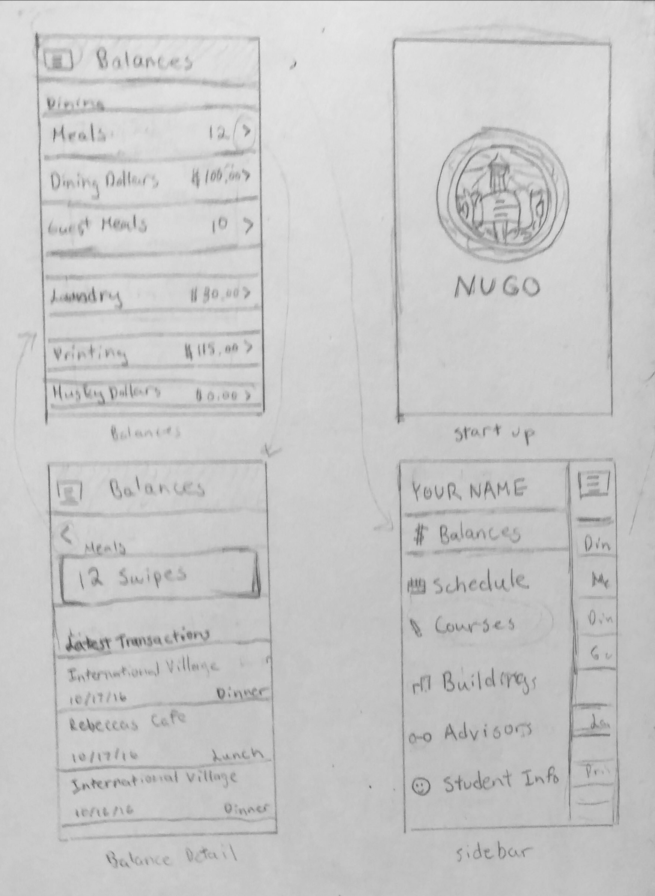

Coming into Northeastern University as a freshman, the NUGO app was essential for me to keep track of my class schedule, meal swipes, and other balances. Although a very useful app, I felt like the app was not very intuitive to users nor attractive. I decided to redesign the UI as a project for my Design, Process, Context, & Systems class.
Below is the prototype I created using InvisionApp.
To go about improving the NUGO app, I first had to identify the key components and functions of the app. After discussing with my peers, I decided that the most useful and important features were viewing your balances, schedule, and courses. While I wanted to retain all previous functionality of the NUGO app, I chose to focus on fleshing out these three components.
Before starting the wireframe, I downloaded several agenda/scheduler apps for research. I noted the features I thought worked well, and those that did not, and I compared them to the current NUGO app. Something I definitely wanted to add in my version of NUGO was a calendar view. The current app show's your upcoming classes, and which classes you have on each day of the week, but there was no way to view your full schedule, or long-term plans.
I also wanted to create clear sections for better navigation. I felt like everything important was on the "Home" section of NUGO, including all of your meal swipes, laundry and printing dollars, and upcoming classes.
For this redesign, I wanted the workflow to go from the navigation section, to the section overview, to the detail view. I chose a simple sidebar as the main mode of navigation because I thought it was the most intuitive and effective.
As shown in my sketch, each section has an overview, which displays the most important information, such as number of meal swipes left or remaining balance. However if the user would like more information, they will be directed to the detail view after pressing on the component. For example, in the case of meal swipes the detail view would show when and where the last swipes were used. A similar work-flow was used for the other sections as well.